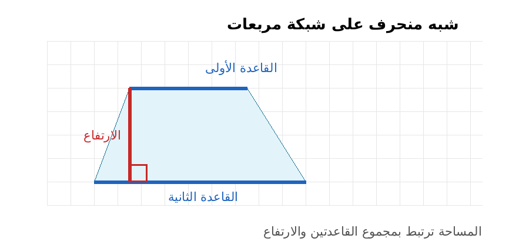
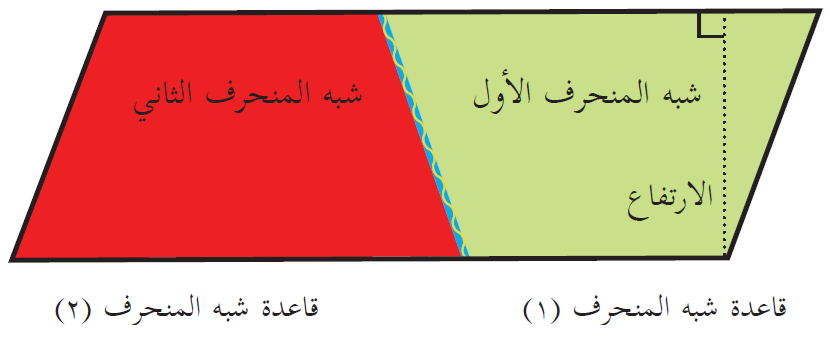
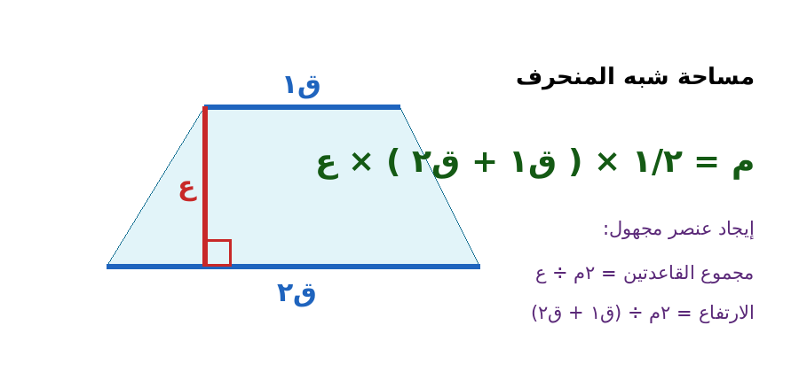

| البند | البيان | البند | البيان |
|---|---|---|---|
| المادة | الرياضيات | الصف | السادس الأساسي |
| الوحدة | السابعة: الهندسة | عنوان الدرس | مساحة شبه المنحرف |
| عدد الحصص المقترح | 4 حصص × 45 دقيقة | المجال | الهندسة والقياس |
| مكان التنفيذ | غرفة الصف/مختبر الحاسوب/اللوح الذكي | نوع التحضير | تحضير محوسب مع ورقة عمل تفاعلية |
| المعلم : زهدي زاهدة | التاريخ: ............ |
فكرة الدرس المركزية
يبني الدرس مفهوم مساحة شبه المنحرف من خلال تركيب شبهين متطابقين لتكوين متوازي أضلاع، ثم يستنتج الطلبة أن مساحة شبه المنحرف تساوي نصف حاصل ضرب مجموع القاعدتين في الارتفاع، ويوظفون القانون في مسائل مباشرة وحياتية.
 عناصر شبه المنحرف: قاعدتان وارتفاع |
 استنتاج القانون بتركيب شبهين متطابقين |
 القانون والعلاقات العكسية |
|---|
الأهداف التعليمية السلوكية
• أن يميز الطالب قاعدتي شبه المنحرف والارتفاع في أشكال مرسومة بأوضاع مختلفة.
• أن يستنتج الطالب قانون مساحة شبه المنحرف من خلال نشاط عملي أو محوسب.
• أن يحسب الطالب مساحة شبه منحرف معلوم فيه طولا القاعدتين والارتفاع.
• أن يجد الطالب الارتفاع أو إحدى القاعدتين إذا عُرفت المساحة والعناصر الأخرى.
• أن يوظف الطالب القانون في حل مشكلة حياتية مع كتابة وحدة القياس المناسبة.
المفاهيم والتعلم القبلي والمهارات
| المحور | التفصيل |
|---|---|
| المفاهيم | شبه المنحرف، القاعدتان المتوازيتان، الارتفاع، مجموع القاعدتين، وحدة مربعة. |
| التعلم القبلي | مساحة المستطيل، مساحة متوازي الأضلاع، مساحة المثلث، الارتفاع في شبه المنحرف، القسمة كعملية عكسية. |
| المهارات الرياضية | التمييز، الاستنتاج، التعويض، حل المسائل العكسية، تفسير وحدة القياس. |
خطة سير الحصص
| الحصة | محور الحصة | الإجراءات والزمن |
|---|---|---|
| الأولى | تمييز العناصر وتقدير المساحة | 5 د تمهيد حياتي. 10 د تحديد القاعدتين والارتفاع. 12 د نشاط شبكة مربعات. 13 د نشاط محوسب. 5 د إغلاق. |
| الثانية | استنتاج القانون | 5 د مراجعة. 20 د مقصوصات وتركيب شبهين. 8 د مناقشة جماعية. 7 د صياغة القانون. 5 د تثبيت محوسب. |
| الثالثة | تطبيق القانون مباشرة | 5 د تهيئة. 15 د أمثلة موجهة. 10 د تدريب فردي. 10 د تحقق محوسب. 5 د تذكرة خروج. |
| الرابعة | المسائل العكسية والحياتية والتقويم | 5 د مراجعة. 15 د مسائل حياتية. 10 د تعلم تعاوني. 10 د اختبار قصير. 5 د تغذية راجعة. |
نموذج التحضير وفق النمط المعتمد
| اليوم/التاريخ | الأهداف | المفاهيم الجديدة | التعلم القبلي | الأنشطة والتدريبات | التقويم | التغذية الراجعة |
|---|---|---|---|---|---|---|
| الحصة الأولى اليوم: ........ التاريخ: ........ |
أن يميز الطالب القاعدتين والارتفاع، وأن يقدّر المساحة على شبكة مربعات. | شبه منحرف، قاعدتان، ارتفاع، وحدة مربعة. | مفهوم المساحة، تمييز الأضلاع المتوازية، الارتفاع. | تمهيد بلوحة/سجادة على شكل شبه منحرف. يحدد الطلاب القاعدتين والارتفاع، ثم يستكشفون النموذج المحوسب بالمنزلقات ويقارنون أثر القاعدتين والارتفاع في المساحة. | سؤال شفوي وتذكرة قصيرة: حدّد القاعدتين والارتفاع ثم اكتب خطوة بدء الحساب. | تلوين القاعدتين بلون واحد والارتفاع بلون آخر، ووضع علامة الزاوية القائمة. |
| الحصة الثانية اليوم: ........ التاريخ: ........ |
أن يستنتج الطالب قانون مساحة شبه المنحرف من ضم شبهين متطابقين. | نصف المساحة، مجموع القاعدتين، قانون المساحة. | مساحة متوازي الأضلاع، التطابق، القص والنقل. | تعمل المجموعات بمقصوصتين متطابقتين؛ يتم تركيب شبهين لتكوين متوازي أضلاع قاعدته ق1+ق2 وارتفاعه ع. يعرض المعلم الاشتقاق في الورقة المحوسبة. | يكتب الطالب القانون بالكلمات والرموز: م = ١/٢ × (ق1 + ق2) × ع. | التأكيد أن سبب عامل ١/٢ هو أن شبه المنحرف الواحد نصف الشكل الناتج. |
| الحصة الثالثة اليوم: ........ التاريخ: ........ |
أن يحسب الطالب مساحة شبه منحرف معلوم فيه طولا القاعدتين والارتفاع. | التعويض في القانون، وحدة المساحة. | الجمع، الضرب، الأقواس، وحدات الطول والمساحة. | أمثلة موجهة: قاعدتان 5 سم و12 سم وارتفاع 8 سم، ولوحة قاعدتاها 50 سم و80 سم وارتفاع 40 سم. تدريب فردي ثم تحقق محوسب. | مسألة خروج: قاعدتاه 12 سم و8 سم وارتفاعه 5 سم. | علاج خطأ ترتيب العمليات: جمع القاعدتين داخل القوسين أولاً ثم الضرب في الارتفاع والنصف. |
| الحصة الرابعة اليوم: ........ التاريخ: ........ |
أن يجد الطالب عنصراً مجهولاً، وأن يوظف القانون في موقف حياتي. | مسألة عكسية، ارتفاع مجهول، قاعدة مجهولة. | القسمة كعملية عكسية، قراءة المسألة. | مسائل حياتية: مرآة، سجادة، لوحة، قطعة أرض. يحدد الطلاب المعطيات والمطلوب، ثم ينفذون الاختبار المحوسب القصير. | اختبار قصير من 5 فقرات + ورقة عمل ورقية. | تصحيح فردي لتسلسل الحل ووحدة القياس، والتأكد من المحافظة على المساواة. |
استراتيجيات التدريس والوسائل
| البند | التفصيل |
|---|---|
| استراتيجيات التدريس | الحوار والمناقشة، التعلم التعاوني، الاستقصاء، المقصوصات، التعلم المحوسب، الحل الفردي، التعلم القائم على المشكلة. |
| الوسائل التعليمية | كتاب الطالب، السبورة، جهاز عرض/لوح ذكي، أجهزة حاسوب أو لوحية، ورقة العمل المحوسبة، مقصوصات شبه منحرف، شبكة مربعات، مسطرة، أقلام ملونة. |
| الربط الحياتي | حساب مساحة لوحة فنية، مرآة، سجادة، قطعة أرض، أو تصميم حديقة على شكل شبه منحرف. |
الصعوبات والمفاهيم الخاطئة المتوقعة وإجراءات علاجها
| الصعوبة/الأخطاء المفاهيمية | إجراء علاجي مقترح |
|---|---|
| ضرب ١/٢ في إحدى القاعدتين قبل جمع القاعدتين. | كتابة القانون بالأقواس: م = ١/٢ × (ق١ + ق٢) × ع، وتدريب الطلبة على جمع القاعدتين أولاً. |
| استخدام الساق المائل بدلاً من الارتفاع. | تلوين الارتفاع بلون مختلف ووضع علامة زاوية قائمة، وتدريب الطالب على إنزال عمود بين القاعدتين أو امتدادهما. |
| صعوبة تمييز الارتفاع إذا كان خارج الشكل أو على امتداد القاعدة. | عرض أشكال بأوضاع مختلفة ورسم الارتفاع أكثر من مرة باستخدام المسطرة. |
| الخطأ في المسائل العكسية عند إيجاد الارتفاع أو قاعدة مجهولة. | تحديد المعطيات والمجهول ثم كتابة القانون واستخدام: ع = ٢م ÷ (ق١+ق٢)، ومجموع القاعدتين = ٢م ÷ ع. |
| الخلط بين وحدة الطول ووحدة المساحة. | القاعدتان والارتفاع بوحدة طول، أما المساحة فوحدة مربعة مثل سم² أو م². |
تثبيت الأهداف بورقة العمل المحوسبة
| جزء الورقة المحوسبة | كيف يخدم هدف الدرس؟ | دور المعلم |
|---|---|---|
| استكشف بالشبكة | يتحكم الطالب في ق١ وق٢ والارتفاع والميل ويرى أثرها في المساحة. | يسأل: أين القاعدتان؟ ولماذا لا نستخدم الساق المائل؟ |
| استنتاج القانون | يعرض تركيب شبهين متطابقين لتكوين متوازي أضلاع. | يقود النقاش إلى أن مساحة شبه واحد = نصف الشكل الناتج. |
| تدرب وتحقق | أسئلة مباشرة وعكسية مع تغذية راجعة فورية. | يتابع التعويض ووحدة القياس وتصحيح الأخطاء. |
| اختبار قصير | يقيس فهم القانون ووحدة المساحة وثبات المساحة عند تغير الميل. | يستخدم الدرجة لتحديد الدعم أو الإثراء. |
ورقة عمل ورقية مرافقة
تعليمات للطالب: حدّد القاعدتين والارتفاع أولاً، ثم اكتب القانون، ثم عوّض، ولا تنس وحدة القياس المناسبة.
| رقم السؤال | السؤال |
|---|---|
| 1 | أكمل: مساحة شبه المنحرف = ١/٢ × ( __________ + __________ ) × __________. |
| 2 | في الشكل المرسوم على شبكة مربعات: حدّد القاعدتين المتوازيتين، وارسم الارتفاع بلون مختلف. |
| 3 | أوجد مساحة شبه منحرف قاعدتاه 12 سم و8 سم، وارتفاعه 5 سم. |
| 4 | لوحة فنية على شكل شبه منحرف قاعدتاها 80 سم و50 سم، وارتفاعها 40 سم. أوجد مساحتها. |
| 5 | مرآة على شكل شبه منحرف، طول قاعدتيها 25 سم و35 سم، وارتفاعها 15 سم. أوجد مساحتها. |
| 6 | سجادة على شكل شبه منحرف، طولا قاعدتيها 4 م و3 م، وارتفاعها 3.5 م. إذا كان ثمن المتر المربع 25 ديناراً، احسب ثمنها. |
| 7 | شبه منحرف مساحته 80 م²، وطولا قاعدتيه 2 م و8 م. أوجد ارتفاعه. |
| 8 | شبه منحرف مساحته 96 سم²، وارتفاعه 8 سم، وإحدى قاعدتيه 10 سم. أوجد طول القاعدة الأخرى. |
| 9 | ما الخطأ في العبارة الآتية؟ م = ١/٢ × ق١ + ق٢ × ع. صححها. |
| 10 | فسر لماذا تكون وحدة ناتج المساحة سم² أو م² وليست سم أو م. |
إجابات ورقة العمل
| السؤال | الإجابة النموذجية |
|---|---|
| 1 | طول القاعدة الأولى، طول القاعدة الثانية، الارتفاع. |
| 2 | إجابة رسمية: يحدد الطالب الضلعين المتوازيين ويرسم عموداً بينهما أو على امتدادهما. |
| 3 | م = ١/٢ × (12 + 8) × 5 = 50 سم². |
| 4 | م = ١/٢ × (80 + 50) × 40 = 2600 سم². |
| 5 | م = ١/٢ × (25 + 35) × 15 = 450 سم². |
| 6 | م = ١/٢ × (4 + 3) × 3.5 = 12.25 م²؛ الثمن = 12.25 × 25 = 306.25 ديناراً. |
| 7 | 80 = ١/٢ × (2 + 8) × ع، إذن ع = 80 ÷ 5 = 16 م. |
| 8 | مجموع القاعدتين = ٢ × 96 ÷ 8 = 24 سم؛ القاعدة الأخرى = 24 - 10 = 14 سم. |
| 9 | الخطأ إهمال الأقواس؛ التصحيح: م = ١/٢ × (ق١ + ق٢) × ع. |
| 10 | لأننا نضرب وحدة طول في وحدة طول، فيكون الناتج وحدة مربعة. |
نشاط إثرائي وتكليف بيتي
• نشاط إثرائي: صمم لوحة فنية على شكل شبه منحرف مساحتها 120 سم²، واختر لها قاعدتين وارتفاعاً مناسباً، ثم تحقق من صحة اختيارك.
• تكليف بيتي: ارسم شبهَي منحرف لهما الارتفاع نفسه ومجموع القاعدتين نفسه، ثم احسب مساحتيهما واستنتج العلاقة.
• اسم ملف الورقة المحوسبة المرفق: ورقة_عمل_محوسبة_مساحة_شبه_المنحرف.html